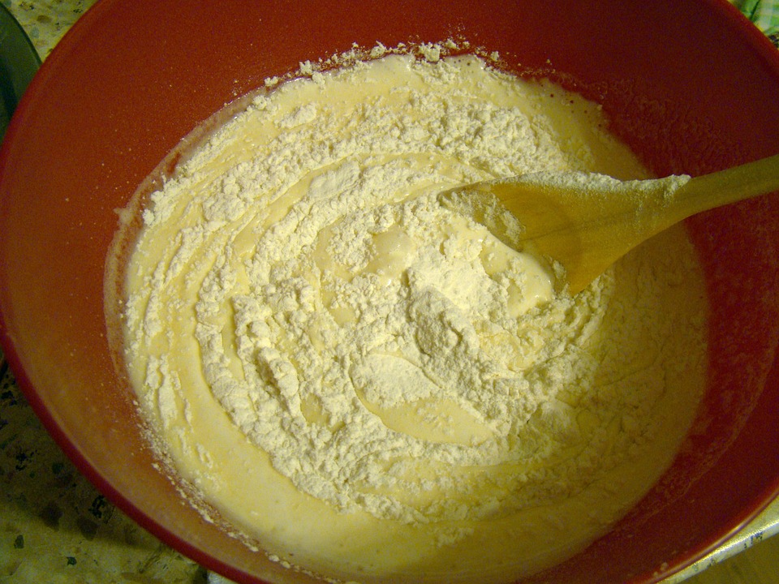
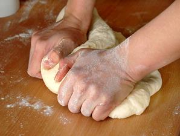

KUE MARYAM

BAHAN - BAHAN
- 250gr TEPUNG TERIGU
- 1 butir TELUR
- 3sdm MARGARIN (LELEHKAN)
- 100ml AIR HANGAT
- 2sdm SUSU BUBUK (OPTIONAL)
- 1/2sdt GARAM
- MARGARIN LELEH UNTUK OLESAN
- MINYAK UNTUK MERENDAM
LANGKAH - LANGKAH
-
Campur semua bahan menjadi satu

-
Uleni sampai kalis, jangan takut lengket ya. Sesekali lumuri tangan dengan tepung

-
Kalisnya adonan tidak sekalis adonan roti